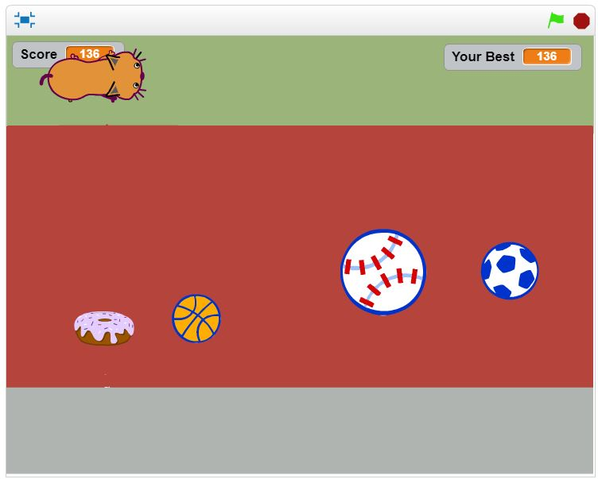

I am a 17 year old Ethiopian-Eritrean-American girl born and raised in the Seattle area. I currently attend Lynnwood
High School. I have two older siblings aged 23 and 25. I am excited to be a girl who codes this summer. When I am
not in Redmond at my Girls Who Code class, I am usually spending time with my friends! I really enjoy spending
time with my loved ones.
A double border.
• The sun
• Bubble tea
• Relaxing
• School
• Ginger
• Stress
I am very tired right now!
1. Youtube
2. Twitter
3. Netflix

This is a snapshot of my sidescroller game. Lisa and I created a game where a hungry cat has to avoid getting hit by sports balls to live and can gain extra points by eating donuts.